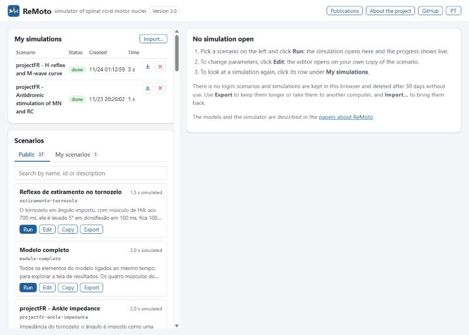
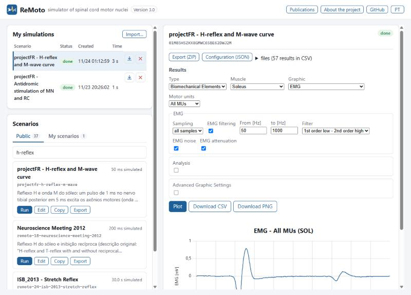
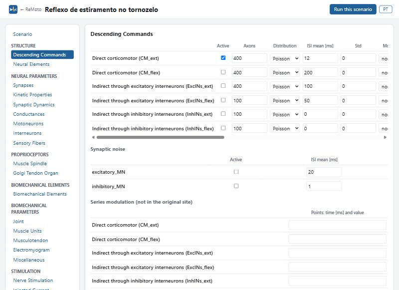

Open the simulator and pick a scenario
Nothing to install and no account to create: ReMoto runs in the browser. Open the
public demo, or http://localhost:8081/simulator/ on your own
machine after starting the server.
The page has two columns. On the left, My simulations at the top, with what you have already run, and the Scenarios below, in two tabs: Public, the 43 that ship with the simulator, and My scenarios, your own copies. The search box filters by name, id or description. The right column holds the simulation you have open.
Each scenario card shows the name, the simulated duration, the id and the first lines of the description — one click shows the rest, which says what that scenario simulates and where it came from. The buttons are Run, Edit, Copy and Export.
Three good ways in: Default – Soleus contraction, the default scenario of the legacy site; projectFR – H-reflex and M-wave curve, which shows the M wave and the H reflex in 50 ms of simulated time; and Full model, with every element switched on, to walk around the results screen.

Click Run and watch it go
The card's Run button opens the simulation in the right column and shows the progress live. It also appears under My simulations, with its state and run time.
The models are detailed, and therefore slow: one simulated second takes 17 to 30 seconds on a four-core machine, and the scenarios range from 50 ms to 30 s of simulated time — the card says which. On the public demo, a small machine shared by every visitor, simulations go into a round-robin queue; on your own machine there is no queue.
The × on the row cancels a running simulation or deletes a finished one. You can close the browser: the simulation keeps going on the server, and the row will be there when you come back.
Every simulation records the exact scenario, the random seed and the engine version. The same scenario with the same seed gives the same results, bit for bit, with any number of threads.
The results screen you already know
Once the simulation ends, the right column becomes the results screen of the legacy site: the same menus, names and axes. Choose what you want to see and click Plot.

- Type
- Biomechanical Elements (force, EMG, lengths, torque, motor units), Neural Elements (motoneurons, afferents, tracts and interneurons), Properties, Summary and the ready-made layouts, such as Spikes MNs, Forces and General.
- Graphic
- The plot itself: 37 biomechanical ones (from the twitch to the joint torque) and 18 per neuron (raster, instantaneous firing rate, interspike-interval histogram, soma and dendrite potentials, conductances, phase plane). The menus beside it choose the muscle, the nucleus and the neuron.
- EMG
- When the plot is the EMG, the options of the old screen appear: sampling, a 1st/2nd or 3rd/3rd order filter, cut-offs, noise and attenuation. With the default options it is the EMG the engine recorded; change any of them and it is rebuilt from the raw signal.
- Analysis
- Statistics of what is plotted (points, mean, variance, standard deviation, CV, minimum and maximum, with the mean ± SD lines) and the FFT, with the periodic-signal option and the choice of axes.
- Advanced
- Under Advanced Graphic Settings, up to eight subplots in one figure, overlay (Hold On), axis limits, title, labels, legend, colour, height and font.
- Download
- Download CSV gives the numbers behind the plot (the "file" option of the legacy site) and Download PNG the figure. Export (ZIP), at the top, takes the whole simulation: the manifest with the seed and the engine version, the configuration and every result in CSV. Configuration (JSON) shows the exact scenario that was run.
Changing parameters: Edit opens your own copy
Public scenarios belong to everyone and are read-only. Edit on one of them creates a copy under My scenarios and opens the editor on it; Copy only makes the copy. On your own scenarios, Edit opens the editor directly.
The editor is the one from the legacy site: the same menu on the left, the same screens, labels, units and limits. Each screen saves on its own Save button; Run this scenario, at the top, goes back to the main page with the simulation already starting.

| Group | Screens |
|---|---|
| — | Scenario: name, description and the random seed |
| Simulation | Duration and Time Step: how long to simulate, and the integration step |
| Structure | Descending Commands, Neural Elements |
| Neural Parameters | Synapses, Kinetic Properties, Synaptic Dynamics, Conductances, Motoneurons, Interneurons, Sensory Fibers |
| Proprioceptors | Muscle Spindle, Golgi Tendon Organ |
| Biomechanical | Biomechanical Elements (the joint and muscle models), Joint, Muscle Units, Musculotendon, Electromyogram, Miscellaneous |
| Stimulation | Nerve Stimulation, Injected Current |
Field labels stay in English in both languages, as in the original, so that the material written for it and the papers still apply. The limits are the old ones too: at most a thousand neurons per type in each nucleus, a minimum interspike interval, a minimum time step and the minimum refractory periods.
Building your own, starting from a scenario
The shortest path is to copy the scenario closest to what you want and change it. The order below is the one of the old guide, brought up to today's screens.
-
The nuclei and how many neurons
Under Structure → Neural Elements, choose the muscles (SOL, MG, LG and TA) and how many motoneurons of each type (S, FR, FF), afferents and interneurons take part. Anything left at zero is not created and costs no time.
-
What drives the system
Under Descending Commands, switch the tracts on and choose the number of axons, the distribution (Poisson, gamma or Gaussian), the mean interval and the modulation. Under Stimulation, the pulse on the tibial or common peroneal nerve, or a current injected into chosen neurons.
-
The feedback
Afferents only fire if something drives them: the spindle and the Golgi tendon organ, under Proprioceptors, with the Hill muscle and a joint model that changes the length (Biomechanical Elements and Joint). With an isometric ankle and the default muscle, the spindle is not integrated.
-
The synapses
Under Neural Parameters, the conductance, reversal potential, delay and connectivity of each pathway, short-term depression or facilitation, and, if you want, a weight that falls with the distance between the cells.
-
Duration, step and seed
Under Simulation → Duration and Time Step, how long to simulate and with which step; under Scenario, the seed. Start with a short duration: wall-clock time grows with it and with the number of neurons.
-
Run and look
Save on every screen you change, then Run this scenario. If nothing happens where you expected it, check whether the element is active: almost everything starts switched off, and the features that came from the Fortran version only act when a scenario chooses them.
No login: keep your work and take it with you
There is no account and no database. Each browser gets a workspace of its own, identified by a 30-day cookie: the work survives closing the browser and server restarts, and is deleted after 30 days without use. No personal data is stored.
To keep it longer, or take it to another computer, use the export buttons:
- One scenario
- Export on the card downloads the scenario as JSON: the whole configuration, the duration, the step and the seed, in a text file that also runs on the command line.
- All of yours
- Export all, on the My scenarios tab, gives a .zip with one JSON per scenario; Import… beside it takes both formats back.
- One simulation
- Export (ZIP) takes the manifest, the configuration and the results in CSV. The Import… under My simulations brings that .zip back, checking the manifest against its hash.
Outside the browser, with the same file
The JSON you export runs unchanged and with no server, writing every result to CSV. It is the way to go for long simulations, parameter sweeps and a cluster.
$ java -jar remoto-cli.jar run my-scenario.json \ --duration-ms 500 --threads 4 -o results/ $ java -jar remoto-cli.jar sweep my-scenario.json \ --protocol hm --range 5:40:1 -o results/hm-curve
The output folder gets the frozen scenario, a manifest with the seed and the
engine version, and one CSV per result. sweep runs a batch protocol — in the example, the
H-reflex and M-wave curve from 5 to 40 mA — and writes one row of measurements per simulation. There
are also validate, which checks scenario files, and export-legacy, which converts
configurations from the original database.
What this guide leaves out — build instructions, the REST API, the scenario format and installing on a server — is in the README and in the full documentation. The models are described in the papers.